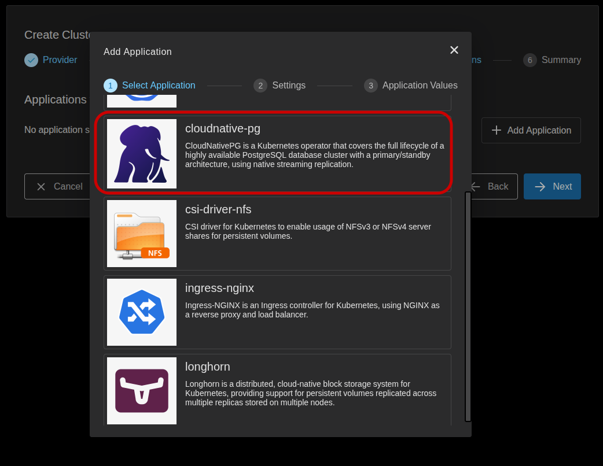
0.29.1 and leave the namespace and name as cloudnative-pg.
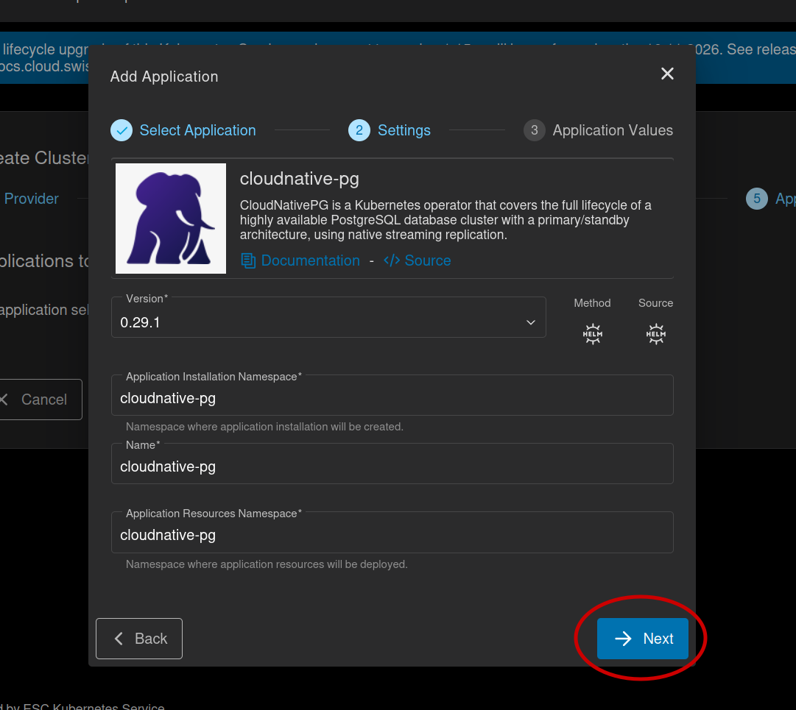
values.yaml should look like this
Click Add Application.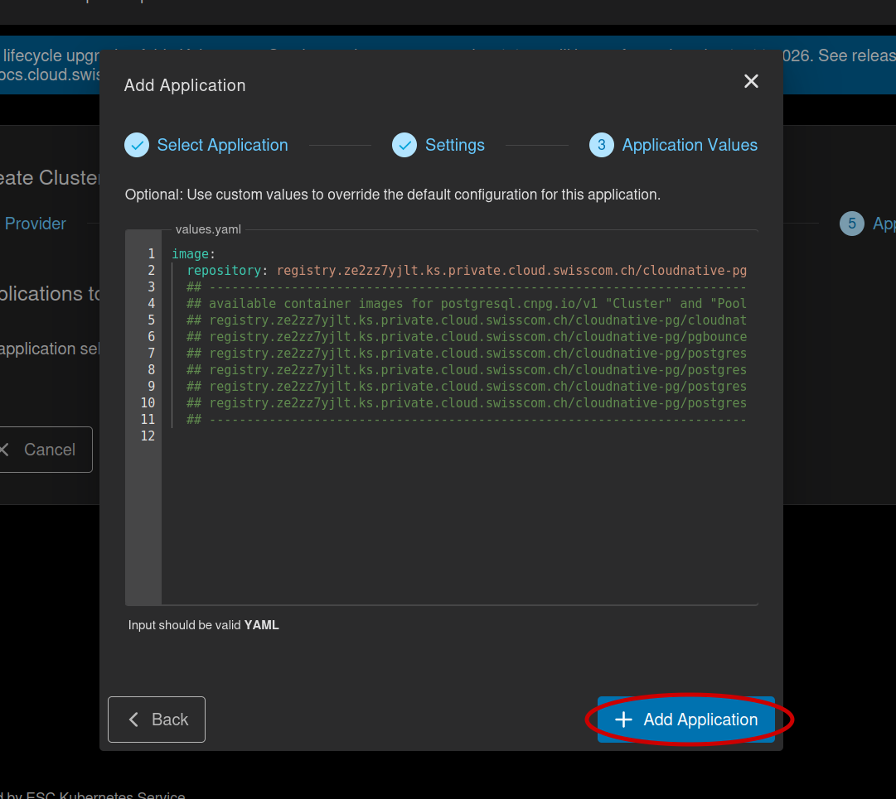
Make sure kubectl is installed on your machine:
# Linux (amd64)
export KUBECTL_VERSION=$(curl -Ls https://dl.k8s.io/release/stable.txt)
curl -LO "https://dl.k8s.io/release/${KUBECTL_VERSION}/bin/linux/amd64/kubectl"
chmod +x kubectl && sudo mv kubectl /usr/local/bin/
# macOS (Homebrew)
brew install kubectl
# Windows (winget)
winget install Kubernetes.kubectlkubectl version --clientkubectl commands.
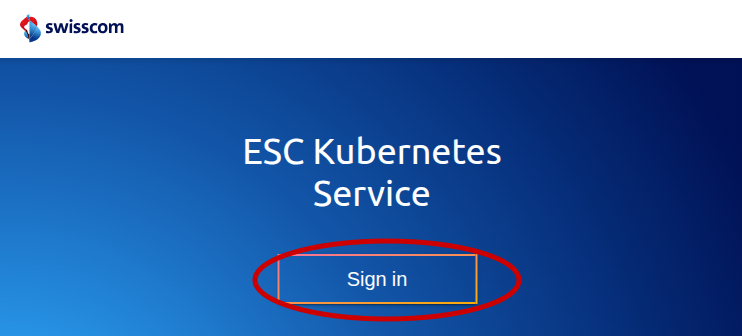

Click the project you were assigned (e.g. camptocamp-01).
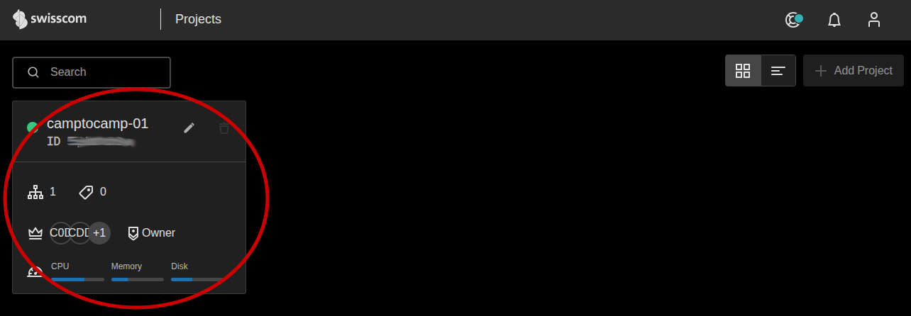
On the Project Overview page, click Create Resource → Cluster.
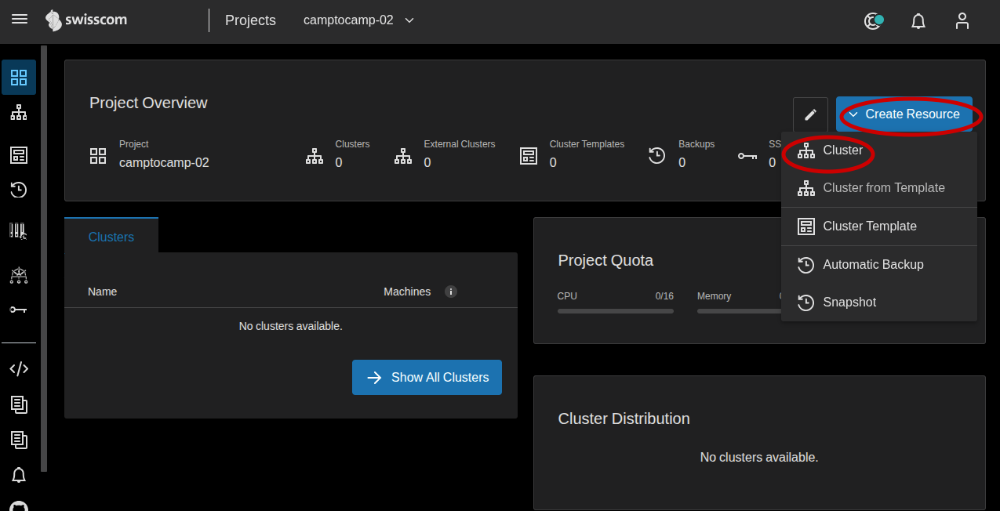
The Create Cluster wizard opens with six tabs: Provider → Cluster → Settings → Initial Nodes → Applications → Summary.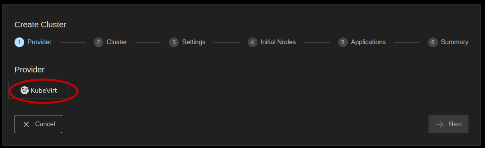
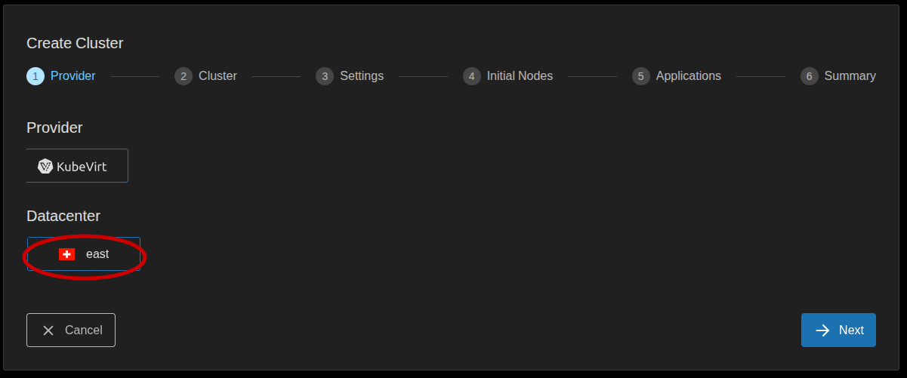
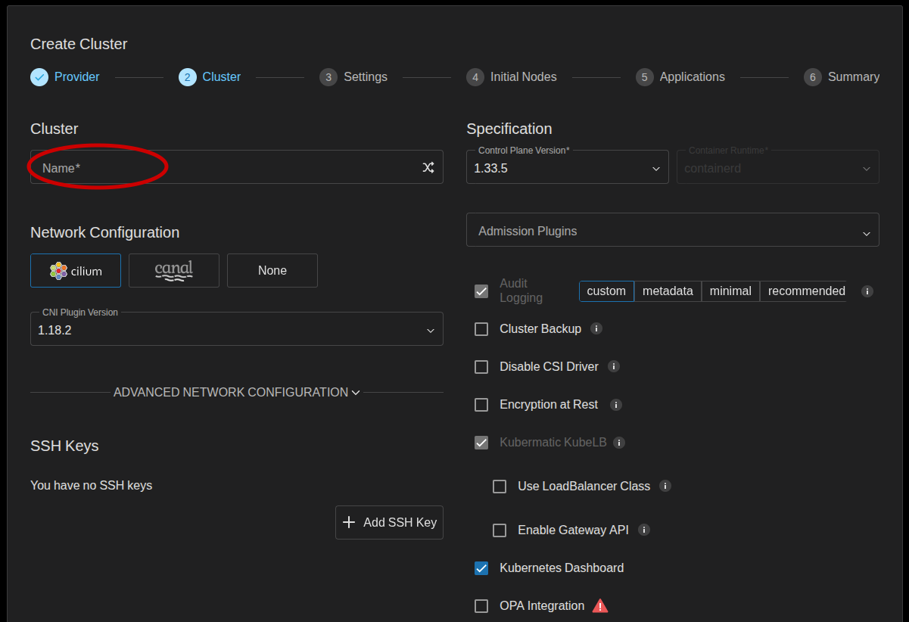
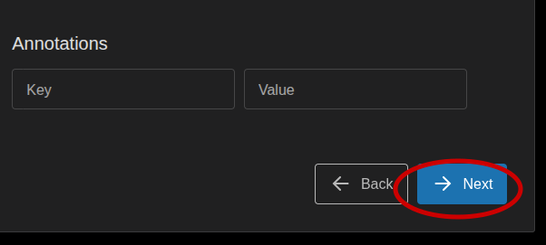
In Basic Settings → Provider Preset, select swisscom-east, then click Next.

Set up a single worker node with these values, then click Next:
| Field | Value |
|---|---|
| Replicas | 1 |
| Operating system | Ubuntu (profile swisscom-ubuntu-24.04) |
| CPUs | 4 |
| Memory (MB) | 16000 (≈16 GB) |
| Subnet | any available subnet |
| Primary disk – Ubuntu system image | Ubuntu 24.04 image |
| Primary disk – Storage class | san-infra-standard-olt (default) |
| Primary disk – Size (GB) | 20 |

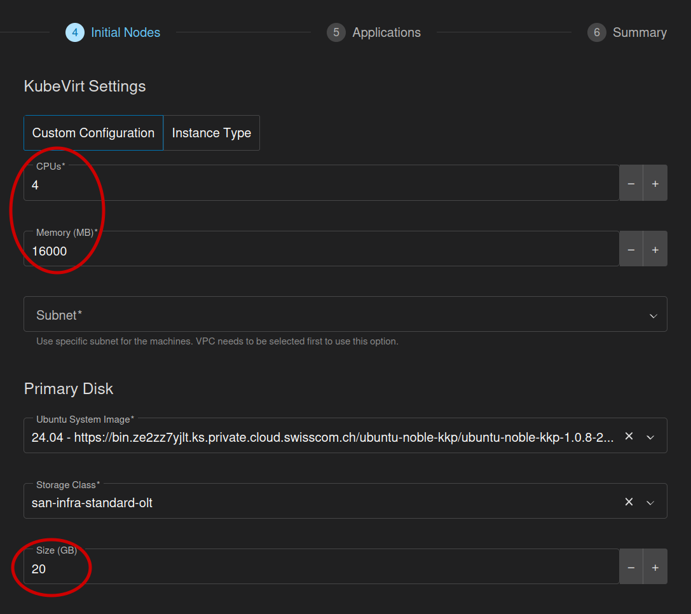

Install two applications on the new cluster.
9a. Add cloudnative-pg

0.29.1 and leave the namespace and name as cloudnative-pg.

values.yaml should look like this
Click Add Application.
cloudnative-pg should now be listed under Applications to Install.
 Click Next.
Click Next.
Check the summary:
Then click Create Cluster.
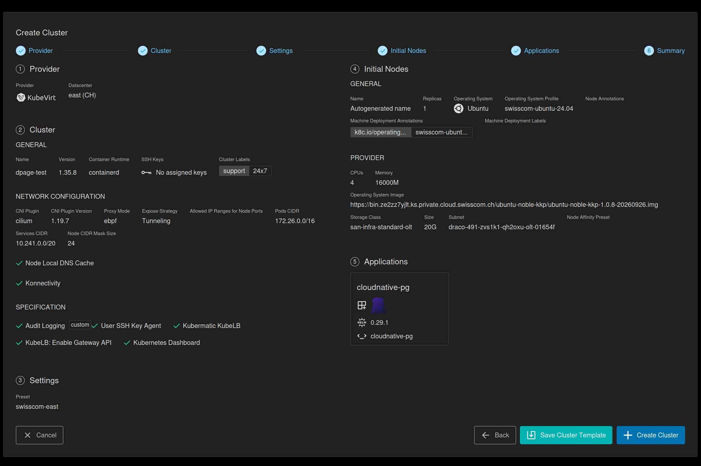
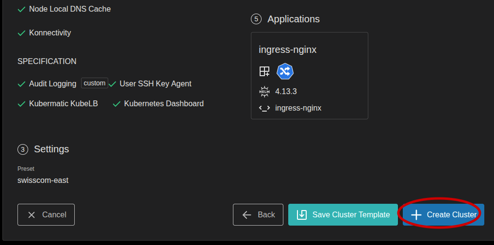
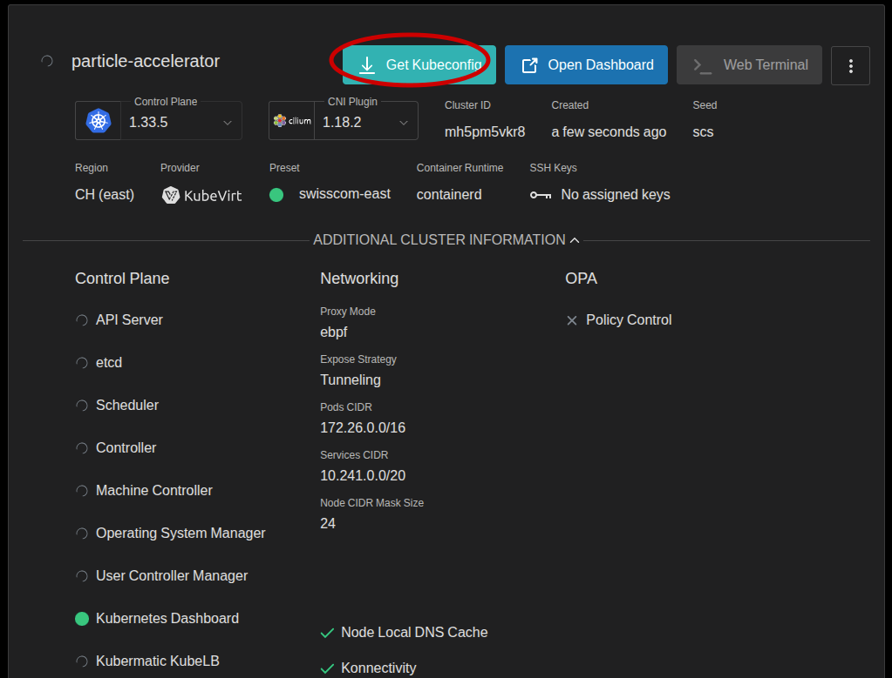

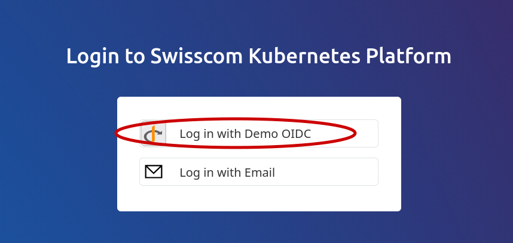
~/.kube/config; use the KUBECONFIG variable instead.
export KUBECONFIG=/path/to/downloaded/kubeconfig
kubectl get nodes
kubectl get pods -AYou should see one Ready node, plus pods in the cloudnative-pg and
openmetrics-accelerator-lab namespaces.